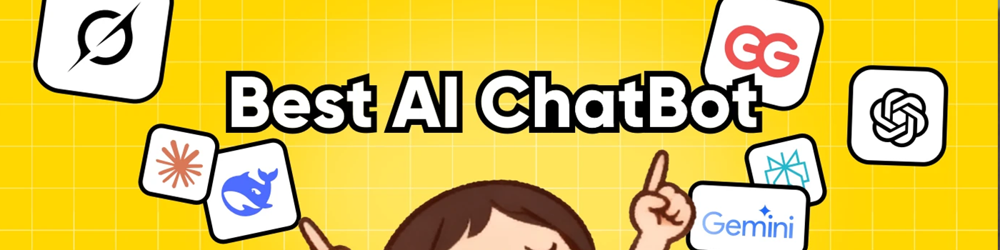

2025 年最佳 AI 聊天機器人：哪款 AI 助手真正適合你？
數據顯示，目前全球已有超過9.87億人正在使用AI聊天機器人。在這個AI飛速發展、差異化模型層出不窮的時代，選擇合適的聊天機器人已經成為了一件令人頭疼的事情。
朋友們經常問我："我應該選擇 ChatGPT Plus 還是 Claude Pro？如果我只需要內容寫作和研究方面的幫助，還有其他更好的選擇嗎？" 每個人都害怕浪費錢、選錯工具，或者為無法有效使用的東西付費。
作為一名經常親身測試各種人工智能工具的博主，我完全理解這一點。因此，我決定撰寫這篇文章，清晰地解釋2025年最值得關注的聊天機器人：哪些最適合學生，哪些最適合內容創作者。
我希望這篇文章能幫助你根據你的特定需求做出正確的選擇。
2025 年最佳 AI 聊天機器人：滿足各種需求的 7 大精選
ChatGPT——最佳整體人工智能聊天機器人
Perplexity——最可靠的研究和信息人工智能
Claude——最佳長篇內容摘要人工智能
DeepSeek——最像人類的對話式人工智能
Grok——最有趣的個性人工智能聊天機器人
Gemini——最佳學術和學習支持人工智能
Rita——最便捷的一體化AI助手
為什麼選擇這七個人工智能聊天機器人？
我測試過無數的人工智能聊天機器人，並將它們廣泛應用於工作和內容創作。如果要我挑選幾個真正具有代表性價值和實用價值的聊天機器人，以下七個絕對是佼佼者。我的理由很簡單：
1. 技術性能： 它們在自然對話、語境理解、工具集成和推理能力等關鍵領域表現出色。下文我將深入探討具體細節。
2. 市場認可度： 僅 Just ChatGPT、Claude、Gemini 和 DeepSeek就佔據了全球網絡流量的 58.8%。
3. 全面覆蓋用例： 無論你需要寫作、學習、編碼、研究、角色扮演還是問答方面的幫助，這七個都可以處理幾乎你能想到的任何 AI 任務。
這七個人工智能聊天機器人就像一群多元化的朋友，每個機器人都有獨特的個性和優勢，可以滿足你的各種需求。
接下來，我將根據真實的用戶體驗來介紹每一個，涵蓋它們的功能、目標用戶、定價和定位。
ChatGPT
ChatGPT 仍然是目前功能最齊全的 AI 聊天工具。它可以與你一起集思廣益、調試代碼、解釋學術概念，甚至提供日常事務的建議。
| ChatGPT 優點 | ChatGPT 缺點 |
|---|---|
| + 多模式支持 + 強有力的推理 + 豐富的生態系統 |
- 容易產生幻覺，需要核實事實 - 安全限制限制功能 |
🤖 ChatGPT 的最佳用例： 學生教育、寫作、編程、研究、製作 PPT、創意工作和團隊協作。
為什麼選擇 ChatGPT
正如它的界面所示，你可以"問任何問題"。無論是頭腦風暴、調試問題，還是學術問題，它都能提供結構化的答案。我喜歡用它來分享我零散的想法，因為它能給我帶來更多靈感。

GPT-5於 2025 年 8 月發布，帶來重大升級。它在多模態推理、代碼生成、檢索和專業應用方面處於領先地位。在MedXpertQA醫學基準測試中，GPT-5 的理解能力比競爭對手高出 29.62% ，推理能力比競爭對手 高出 36.18% 。其在SWE-bench Verified （代碼修復）測試中的得分為 74.9%， 位居前列。
Canvas協作模式可讓你在共享的"白板"上實時共同編輯內容。其深度研究功能可在線搜索並生成來源分析報告，從而節省專業寫作和研究的時間。
其他主要功能和訂閱計劃
- AI 模型： GPT-5（Plus）、GPT-5-Thinking（Pro）、GPT-4o（免費）
- 語音功能： 5 個 AI 語音角色，支持實時對話和打斷
- 文件處理： 支持PDF、DOCX、代碼文件上傳和分析
- 安全功能： 企業級安全性，包括 SSO（單點登錄）和 MFA（多因素身份驗證）
- ChatGPT 價格 ： 免費；Plus 每月 20 美元；Pro 每月 200 美元；Business 每月 25 美元；企業定製價格
- 預算訂閱： 環球巴士 ChatGPT Plus 鏡像賬戶 28.88 元/月（鏡像基礎版，全模型6小時/30次）
Perplexity
Perplexity 是一款"答案引擎"，它將大型語言模型 (LLM) 與實時網絡搜索相結合，提供簡潔的答案和可點擊的來源。它支持多輪後續提問和更深入的研究模式，非常適合快速核實事實、學習和研究。
| Perplexity 的優點 | Perplexity 缺點 |
|---|---|
| + 實時信息更新 + 透明引用 + 強大的事實核查能力 |
- 界面可能很複雜 - 對話體驗不太自然 |
🤖 Perplexity 的最佳用例： 信息檢索、事實驗證和趨勢追蹤。非常適合檢索來源權威且無需篩選的新聞、論文或報告。
為什麼選擇 Perplexity
Perplexity 最大的優勢在於其實時網頁搜索功能，並支持逐句引用。每個答案都附有可靠的來源，非常適合快速核實新聞、報紙或公告的真實性。

它支持 GPT-5、Claude 4 Sonnet、Gemini 2.5 Pro 以及自帶的 Sonar 模型。你可以根據自己的喜好進行切換。深度研究模式會從多個來源提取數據，為你提供清晰、結構化的結論，非常適合進行深入分析。
在測試中，Perplexity 在 Humanity 的 Last Exam 基準測試中達到了 21.1% 的準確率，超越了其他主流模型。如果你需要快速核實事實並獲取可靠的信息來源，Perplexity 是一個可靠的選擇。
其他主要功能和订阅计划
- AI 模型： GPT-5、Claude、Gemini 2.5 Pro 和 Sonar — 可根據需要切換
- 空間協作： 用於組織項目的共享團隊知識空間
- Comet Assistant： 瀏覽器側邊欄，用於網頁摘要、查詢和日曆/電子郵件管理
- Perplexity Labs： 新功能測試場地
- Perplexity 價格： 免費；專業版 20 美元/月
Claude
如果說 ChatGPT 像一位多才多藝的老師，那麼 Claude 則更像一位博覽群書的學者。面對堆積如山的長篇文檔，它能夠安靜高效地處理，並以清晰簡潔的語言提煉出關鍵點。隨著 2025 年 9 月 Claude 4.5 的發布，它的推理和任務處理能力將將更加强大，成為當今最先進的「思維模型」之一。
| Claude 優點 | Claude 缺點 |
|---|---|
| + 強大的編碼能力 + 大規模上下文窗口 + 安全可靠 |
- 創意表現一般 - 偶爾提供過時或不正確的回復 |
🤖 Claude 的最佳用例： 複雜推理、多步驟任務、代碼/數據工作流、多文件協作、自動化以及輸出前需要深思熟慮的內容。
為什麼選擇Claude
Claude 是 Anthropic 為創作、編程和智能代理構建的一套「思維」模型。其核心功能包括混合推理、Artifacts 工作區和計算機使用。值得注意的是，在OSWorld（一項在真實計算機任務上測試 AI 模型的基準測試）中，Sonnet 4.5 目前以 61.4% 的得分領先。
Claude 的突出優勢在於其長對話能力。它一次會話最多可處理 1，000，000 個標記（約 750，000 個單詞） 。即使經過數十輪或數百頁的對話，它也能保持上下文的連貫性和邏輯性。我用它來進行小說寫作討論——從人物動機到情節結局。Claude 能夠完美地追蹤故事細節，並提供敏銳的見解。
我最喜歡的功能是Artifacts：它可以在側邊欄實時生成並預覽代碼、頁面或文檔。易於修改和即時共享。使用 項目 模式，就像在一個地方擁有「對話 + 白板 + IDE」一樣。你可以在同一頁面上進行寫作、編程或格式化，並進行實時編輯和預覽。這對於團隊討論和項目文檔來說非常高效。

其他主要功能和訂閱計劃
- AI 模型： Sonnet 4.5、Opus 4.1、Haiku 3.5 等
- 記憶功能： 通過手動管理長期記憶偏好和背景
- 安全功能： 企業級 SSO 和多因素身份驗證
- 項目協作： 與 Google Workspace（Gmail/日曆/文檔）集成
- 定價： 免費；專業版 20 美元/月（月費）或 17 美元/月（年費）；最高 100 美元/月
- 預算選項： 環球巴士 提供 Claude Pro賬戶，每月 198.88 元
DeepSeek
DeepSeek 由中國 DeepSeek AI 團隊開發，並由量化交易公司 High-Flyer 提供支持。作為最年輕的 AI 模型之一，它將人類的溫暖與自然的情感表達融為一體，同時為學習、編程和研究提供強大的推理和邏輯能力。
| DeepSeek 的優點 | DeepSeek 缺點 |
|---|---|
| + 開源靈活性 + 更自然的表達 + 強大的數學和邏輯能力 + 完全免費 |
- 知識更新滯後 - 偶爾顯示服務器繁忙消息 |
🤖 DeepSeek 的最佳用例： 耐心陪伴和情感分享，或對學習和編程任務進行快速推理和清晰解釋。
為什麼選擇 DeepSeek
DeepSeek 提供兩種核心模型：
- deepseek-chat（V3.1-Terminus）： 一般對話和內容創建
- deepseek-reasoner（R1系列）： 複雜邏輯和深度推理
它支持搜索（網頁檢索）和深度思考模式，並帶有可點擊的引文。對於開發者來說，它的API 與 OpenAI 生態系統兼容，因此遷移既便宜又簡單。
與 DeepSeek 聊天感覺很自然——你會忘記它是人工智能。與重複提問的機械模型不同，它會隨著你的情緒而流動，甚至會主動安慰你或幫助你轉移注意力。
除了類似人類的對話之外，它還能出色地處理邏輯和推理。DeepSeek 支持大上下文和思維鏈，將複雜問題分解為多個步驟。無論是編寫代碼、求解數學問題還是調試代碼，DeepSeek-V3 和 R1都能以低於競爭對手的成本提供可靠的結果。
它的開源免費策略迅速積累了龐大的用戶群。雖然功能尚不完善（尚不支持圖像生成），但它已成為學習、編程和情感陪伴的首選。

其他主要功能和訂閱計劃
- 模型選項： 聊天（對話/創作）/推理器（複雜推理）
- 上下文： 聊天 128K，推理器默認 32K，最大 64K
- 輸出容量： 聊天限制為 8K，Reasoner 支持更長的輸出
- 特點： Chat支持JSON輸出、函數調用、代碼補全；Reasoner只專注於思考
- 價格： 免費
Grok
如果你經常在 X 上追蹤新聞線索、尋找報道靈感或關注熱門話題，Grok 是最便捷的工具。它與 X 原生集成，可直接訪問最新推文、熱門列表和用戶討論。
🤖 Grok 的最佳用例： 個人/小團隊進行趨勢跟蹤、主題研究、社交媒體管理 (X) 以及需要帶有實時引用的長文檔摘要的任務。
為什麼選擇 Grok
Grok 是 xAI 的聊天機器人 AI。它在X（前身為 Twitter）平台原生運行，並提供獨立的 Web 和 API 接口。主要模型包括Grok 4（推理）和Grok 4 Fast（雙模式），支持實時搜索和長上下文處理。它擅長社交媒體和趨勢追蹤。
它的代理搜索可以捕獲帶有引用的網頁和 X 討論（x.ai），因此你無需在搜索引擎和瀏覽器選項卡之間跳轉。
對於賬戶管理，你需要快速的視覺內容。Grok 內置的Aurora 圖像模型可以在幾秒鐘內生成插圖、圖形和短視頻。我讓它畫了一只「酷酷的哈士奇」作為玩笑，它畫出了一幅既搞笑又逼真的圖像，既有趣又令人印象深刻。

其他主要功能和訂閱計劃
- 模型： Grok 4 （推理，256K）/ Grok 4 Fast （推理和非推理， 2M 窗口）/ 舊版 Grok 3 / 3 Mini （ 131K ）
- 館藏文檔搜索： 在已上傳或保存的文檔集中進行精確檢索
- 多模式/生成： 用於創意和社交媒體內容的 圖像/視頻生成（Grok Imagine）
- 定價： Premium 每年 7 美元/月 / 8 美元/月
- 預算選項： 專屬充值，環球巴士每月168.88 元
Gemini
如果你把AI比作朋友，那麼Gemini就像那個平時不怎么一起玩，但每當考試或論文截止日期來臨時，總能化險為夷的同學。在學術研究、專業分析和多模態處理等場景中，Gemini幾乎無可替代。
| Gemini的優點 | Gemini的缺點 |
|---|---|
| + 卓越的學術和專業分析能力 + 無縫集成 Google 生態系統 + 清晰、結構良好的回復 |
- 語氣趨於正式 - 網絡搜索/連接的 API 限制 |
🤖 Gemini 的最佳用例： 學術研究和專業分析、跨學科學習、多模式處理、Google Workspace 集成以及需要清晰邏輯和結構的任務。
為什麼選擇Gemini
Gemini 是 Google/DeepMind 推出的多模態 AI 模型系列，涵蓋聊天、創作、代理、推理和搜索等功能。目前活躍的版本包括 Flash / Flash-Lite / Pro / Deep Think（推理模式）等。
Gemini 最大的獨特優勢在於它與 Google 工具的集成。你只需點擊一下，即可在 Gmail 中自動生成電子郵件回復、在 Docs 中重寫文檔，並在 Slides 中創建演示文稿，無需切換平台。對於經常處理學習、研究和工作內容的人來說，這提供了最省時高效的體驗。
作為一款「學者型」人工智能，Gemini 在權威測試中取得了驕人的成績。其 Ultra 版本在學術知識評估 MMLU 中取得了 90% 的優異成績，成為首個超越人類專業平均水平的人工智能！Gemini 的知識庫將延伸至 2025 年初，並支持 45 種以上的語言。
在我與Gemini的互動中，它展現了高度的理性和專業性。當我請求它幫忙編寫算法優化代碼時，它提供了快速高效的解決方案。當我咨詢複雜的醫學問題時，它能夠綜合最新的研究論文，給出客觀公正的分析。

其他主要功能和訂閱計劃
- 深度研究： 複雜問題經過多輪思考和信息整合，以獲得更有條理的結果
- 多模式創作： 上傳 PDF、圖像、音頻供 Gemini 分析或總結
- Google Workspace 集成： 無需複製粘貼，即可直接在 Gmail、文檔、云端硬盤中使用
- Gemini 定價： Google AI Pro 每月 19.99 美元；Google AI Ultra 每月 249.99 美元
- 定價： 環球巴士每月 198.88 元
如何選擇最適合你的 AI 聊天機器人？
經過所有這些討論，你可能會想： 那麼我實際上應該選擇哪一個？
答案取決於你是哪種類型的用戶，以及你主要使用 AI 做什麼。關鍵不在於盲目追求「最新、最強」，而是找到最適合你需求和預算的方案。
我的經驗表明：
- 明確你的需求： 學習、工作、還是日常應用？
- 從免費版本開始： 付費前了解你的習慣
- 提出精確的問題： 這比比較工具更重要
- 保持理性： 人工智能並非無所不能
- 注意隱私： 謹慎處理敏感信息
那麼具體該如何選擇呢？根據我的實際經驗，以下是一些基於場景的建議：
- 學生/學術研究人員 → Claude（長篇文檔摘要）、Gemini（學術問答）
- 專業人士/內容創作者 → ChatGPT（多功能）、Perplexity（研究強國）
- 尋求陪伴 / 日常聊天 → DeepSeek（最像人類）、Grok（最有趣）
- 價值導向/想嘗試 → Rita（一站式體驗，多模式切換）
摘要：哪種人工智能聊天機器人適合你？
沒有「完美」的 AI 聊天機器人，只有符合你特定需求和工作流程的聊天機器人。無論你是需要長文檔分析的學生（Claude）、需要多功能輔助的專業人士（ChatGPT）、尋找可靠資源的研究人員（Perplexity），還是想要自然對話的普通人（DeepSeek），每種工具都能在不同場景下展現出各自的優勢。
我的建議是： 先從免費版本開始，了解你的使用模式，然後再策略性地升級。對於預算有限的用戶，環球巴士上的 ChatGPT拼車也才二十多一個月，即可在一個界面訪問最新GPT5.2模型。
合適的AI聊天機器人能夠持續解決你的問題，且不會超出你的預算。確定你的主要用例，然後進行相應的選擇。
常見問題
有沒有比 ChatGPT 更好的聊天機器人？
「更好」取決於你的需求。如果你想要同理心，DeepSeek 最有人情味；如果你想要幽默，Grok 能讓你開懷大笑；Claude 在處理長篇文檔方面更是無可匹敵。但對於一個全能型的朋友來說，ChatGPT 仍然是最全能的。
我如何選擇合適的人工智能聊天機器人？
想想你的主要用途：學習、工作還是陪伴。程序員可能喜歡 Claude 或 Gemini，作家可能喜歡 ChatGPT，研究人員可能信賴 Perplexity，而 DeepSeek 和 Grok 則擅長休閒聊天。Rita 是經濟實惠的一站式選擇。
值得為人工智能聊天機器人付費嗎？
如果你經常使用，答案是肯定的。付費套餐提供更大的內存、更快的速度和更高級的工具。而且你無需花費太多 —— 在 環球巴士，你可以以官方價格的一小部分獲得共享賬戶，並享受相同的專業功能。